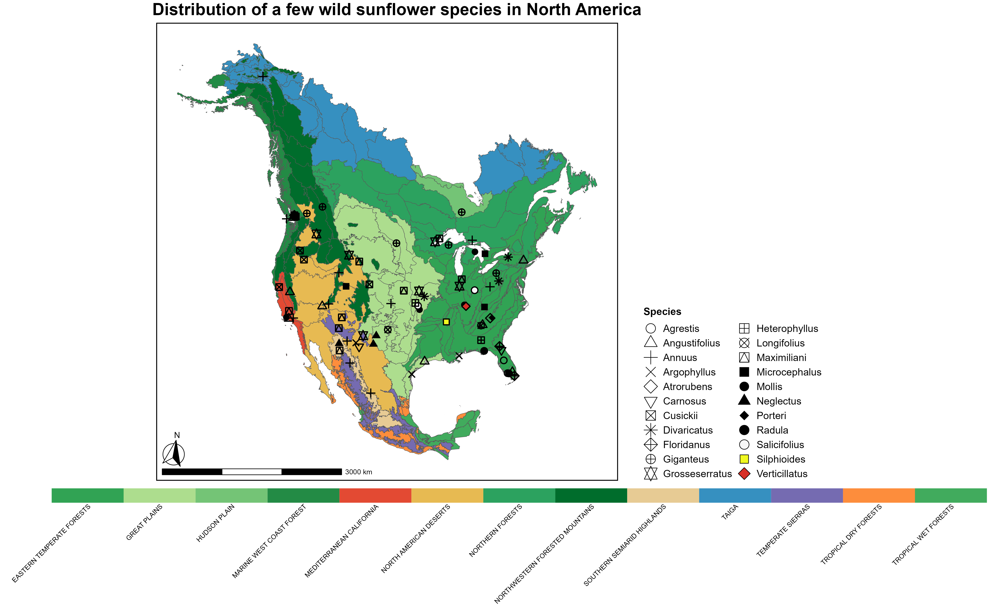

North American Sunflower Species Distribution
This project aims to analyze and visualize the distribution of 22 wild sunflower species (Genus Helianthus) across different ecoregions in North America. In total there are 32 wild sunflower species which account for 50% of the genetic variation in the genus and hence form the diploid backbone. Here we visualize the centroid locations of 22 of them. The analysis is carried out using R, with a focus on spatial data handling and visualization.
Libraries Used
rgbif: For accessing species occurrence data from the Global Biodiversity Information Facility (GBIF).here: For constructing file paths.tidyverse: For data wrangling and visualization.sf: For handling spatial data.RColorBrewer: For color palettes.cowplot,gridExtra,grid,ggspatial,rayshader: For advanced plotting and visualization.
Data Sources
Species occurrence data from GBIF (Global Biodiversity Information Facility)
Citation: GBIF: The Global Biodiversity Information Facility (2023) What is GBIF?. Available from https://www.gbif.org/what-is-gbif
[13 January 2020]Ecoregion shapefile representing different level I ecoregions in North America.
Citation: U.S. Environmental Protection Agency. (2010). NA_Eco_Level1 (vector digital data). U.S. EPA Office of Research & Development (ORD) - National Health and Environmental Effects Research Laboratory (NHEERL), Corvallis, OR.
Workflow
Data Collection:
- Fetch a list of sunflower species and their occurrence data in North America from GBIF.
Data Processing:
- Filter and modify the retrieved data to isolate specific species and variables of interest.
Spatial Data Handling:
- Convert the data frame to a spatial object and perform coordinate transformations.
Spatial Join:
- Match sunflower data with the corresponding ecoregion based on geographical coordinates.
Centroid Calculation:
- Calculate the centroid of each group of species occurrences within an ecoregion.
Visualization Preparation:
- Define custom color and shape mappings for the visualization.
Plot Assembly:
- Combine the main plot, legend plots, and title into a final plot layout.
Output
- A visualization showing the distribution of selected sunflower species across North American ecoregions.

Code
The code for this project can be found here: